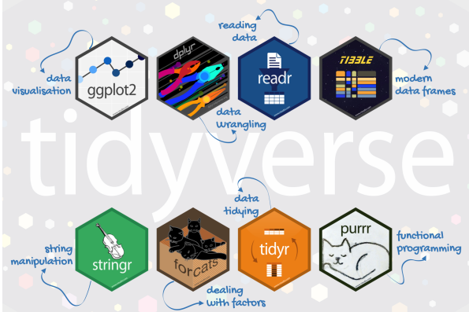

Tidyverse에 대하여
여러 데이터 분석에 유용한 패키지들의 모음집
-
공식적인 tidyverse의 시작은 2016년이다.
이전부터 각각 구성원들이 따로 사용되고 있었다.
ggplot2 패키지는 2005년에 만들어졌다.
핵심 구성 요소

ggplot2 : Data visualization
dplyr : data wrangling
readr : reading data
tibble : modern data frames
stringr : string manipulation
forcats : dealing with factors
tidyr : data tidying
purrr : functional programming
데이터 맛보기
서울시 생활이동 데이터
특정 시점에 서울 안에서 이동, 서울 외부에서 서울로 오고 간 이동
한 데이터통근, 통학, 쇼핑, 여가 등 서울시의 행정수요를 유발하는 모든 이동을 의미한다.
2021 7월 (8시) 이동 데이터
자치구 코드 정보
library(tidyverse)
moving_data <- read_csv('seoul_moving_202107_09_hr.csv')
reference_data <- readxl:: read_excel('reference.xlsx') 데이터 파일 불러오기
.csv파일의 경우read_csv()함수를 사용-
.xlsx 파일의 경우 read_xlsx() 함수를 사용차이점은? –> 파일 형태의 차이에 있다.
::의 의미 –> 로딩 없이 패키지 안에 있는 함수를 사용하고 싶을 때 활용한다.
Ex) readxl 이라는 패키지 안에 함수 read_excel ( )을 로딩없이 사용하고 싶다.
그럴 때,readxl :: read_excel() 와 같이 사용하면 된다.
데이터와 친해지기
- 기초 탐색(R 내장함수)
dim( )
head( )
tail( )
- tidyverse
- glimpse( )
데이터 변수 이름 바꾸기
변수 이름 설정 - 한글 코딩은 싫어요!!
# reference_data
origin_name_reference <- names(reference_data)
origin_name_reference # 한글로 된 변수이름[1] "시도" "시군구" "name" "full name"# 한글 변수들을 영어 변수로 바꿔준다.
# janitor 패키지의 clean_names() 함수를 사용!
reference_data %>%
janitor::clean_names() %>%
names()[1] "sido" "sigungu" "name" "full_name"# moving_data
origin_name_moving <- names(moving_data)
origin_name_moving [1] "대상연월" "요일" "도착시간"
[4] "출발 시군구 코드" "도착 시군구 코드" "성별"
[7] "나이" "이동유형" "평균 이동 시간(분)"
[10] "이동인구(합)" moving_data %>%
janitor::clean_names() %>%
names() [1] "daesang_yeon_wol" "yoil"
[3] "dochagsigan" "chulbal_sigungu_kodeu"
[5] "dochag_sigungu_kodeu" "seongbyeol"
[7] "nai" "idong_yuhyeong"
[9] "pyeong_gyun_idong_sigan_bun" "idong_ingu_hab"
dplyr 패키지(기본 동사 학습)
- Single table 동사들
-
행(row) 관련 동사들
-
열(column) 관련 동사들
시도(sido) 단위는 몇 개인가?
중복 없는 표본들을 걸러준다.
-
-
.keep_all( ) = TRUE설정으로 딸려있는 데이터 보관하기
-
reference_data <- reference_data %>%
janitor::clean_names()
# sido 변수안에 있는 data값들을 분리해서 보여준다.
reference_data %>%
distinct(sido) # A tibble: 17 × 1
sido
<dbl>
1 11000
2 21000
3 22000
4 23000
5 24000
6 25000
7 26000
8 29000
9 31000
10 32000
11 33000
12 34000
13 35000
14 36000
15 37000
16 38000
17 39000# A tibble: 1 × 1
n
<int>
1 17# '.keep_all = TRUE'의 설정으로 딸려있는 데이터도 같이 보여준다
reference_data %>%
distinct(sido, .keep_all = TRUE) %>%
dim()[1] 17 4원하는 행들을 걸러(filter)내는 방법
사용 가능한 함수들
-
연산자들
==, > , >=, &, |, !
-
유용한함수들between( ), near( )
Rows: 1,263,554
Columns: 10
$ 대상연월 <dbl> 202107, 202107, 202107, 202107, 202107, 202107, 2…
$ 요일 <chr> "일", "일", "일", "일", "일", "일", "일", "일", "…
$ 도착시간 <chr> "09", "09", "09", "09", "09", "09", "09", "09", "…
$ `출발 시군구 코드` <dbl> 11010, 11010, 11010, 11010, 11010, 11010, 11010, …
$ `도착 시군구 코드` <dbl> 11010, 11010, 11010, 11010, 11010, 11010, 11010, …
$ 성별 <chr> "F", "F", "F", "F", "F", "F", "F", "F", "F", "F",…
$ 나이 <chr> "00", "10", "10", "10", "10", "15", "15", "15", "…
$ 이동유형 <chr> "HE", "HW", "HE", "EE", "HH", "EH", "WH", "EE", "…
$ `평균 이동 시간(분)` <dbl> 10, 10, 10, 20, 20, 10, 10, 10, 10, 10, 30, 60, 1…
$ `이동인구(합)` <chr> "55.41", "5.9", "41.5", "11.98", "5.93", "6.05", …# 일요일에 운전을 한 여자
moving_data <- moving_data %>%
janitor::clean_names() %>%
filter(yoil == '일',
seongbyeol == 'F')
# 출발코드가 11010 이면서 도착코드가 11010인 data
moving_data %>%
filter(chulbal_sigungu_kodeu == 11010,
dochag_sigungu_kodeu == 11010)# A tibble: 117 × 10
daesang…¹ yoil docha…² chulb…³ docha…⁴ seong…⁵ nai idong…⁶ pyeon…⁷ idong…⁸
<dbl> <chr> <chr> <dbl> <dbl> <chr> <chr> <chr> <dbl> <chr>
1 202107 일 09 11010 11010 F 00 HE 10 55.41
2 202107 일 09 11010 11010 F 10 HW 10 5.9
3 202107 일 09 11010 11010 F 10 HE 10 41.5
4 202107 일 09 11010 11010 F 10 EE 20 11.98
5 202107 일 09 11010 11010 F 10 HH 20 5.93
6 202107 일 09 11010 11010 F 15 EH 10 6.05
7 202107 일 09 11010 11010 F 15 WH 10 4.04
8 202107 일 09 11010 11010 F 15 EE 10 20.39
9 202107 일 09 11010 11010 F 15 HE 10 76.78
10 202107 일 09 11010 11010 F 15 HW 10 48.43
# … with 107 more rows, and abbreviated variable names ¹daesang_yeon_wol,
# ²dochagsigan, ³chulbal_sigungu_kodeu, ⁴dochag_sigungu_kodeu, ⁵seongbyeol,
# ⁶idong_yuhyeong, ⁷pyeong_gyun_idong_sigan_bun, ⁸idong_ingu_hab# A tibble: 25,761 × 10
daesang…¹ yoil docha…² chulb…³ docha…⁴ seong…⁵ nai idong…⁶ pyeon…⁷ idong…⁸
<dbl> <chr> <chr> <dbl> <dbl> <chr> <chr> <chr> <dbl> <chr>
1 202107 일 09 11010 11010 F 20 WH 30 10.83
2 202107 일 09 11010 11010 F 20 EH 60 8.68
3 202107 일 09 11010 11010 F 20 EW 10 *
4 202107 일 09 11010 11010 F 20 WW 70 *
5 202107 일 09 11010 11010 F 20 WE 50 *
6 202107 일 09 11010 11010 F 20 HE 10 100.14
7 202107 일 09 11010 11010 F 20 HH 10 8.67
8 202107 일 09 11010 11010 F 20 HW 10 143.46
9 202107 일 09 11010 11010 F 20 EE 10 43.69
10 202107 일 09 11010 11010 F 25 HH 20 16.16
# … with 25,751 more rows, and abbreviated variable names ¹daesang_yeon_wol,
# ²dochagsigan, ³chulbal_sigungu_kodeu, ⁴dochag_sigungu_kodeu, ⁵seongbyeol,
# ⁶idong_yuhyeong, ⁷pyeong_gyun_idong_sigan_bun, ⁸idong_ingu_hab원하는 행들을 잘라내는 (slice)방법
기본 함수인 head() 의 확장버전
-
기본적으로 인덱싱을 제공
- 맨 마지막 인덱스:
n()
- 맨 마지막 인덱스:
-
유용한 함수들
slice_max( ),slice_min( ),slice_sample(),slice_head(),slice_tail()
# A tibble: 6 × 10
daesang_…¹ yoil docha…² chulb…³ docha…⁴ seong…⁵ nai idong…⁶ pyeon…⁷ idong…⁸
<dbl> <chr> <chr> <dbl> <dbl> <chr> <chr> <chr> <dbl> <chr>
1 202107 일 09 11010 11010 F 20 WE 50 *
2 202107 일 09 11010 11010 F 20 HE 10 100.14
3 202107 일 09 11010 11010 F 20 HH 10 8.67
4 202107 일 09 11010 11010 F 20 HW 10 143.46
5 202107 일 09 11010 11010 F 20 EE 10 43.69
6 202107 일 09 11010 11010 F 25 HH 20 16.16
# … with abbreviated variable names ¹daesang_yeon_wol, ²dochagsigan,
# ³chulbal_sigungu_kodeu, ⁴dochag_sigungu_kodeu, ⁵seongbyeol,
# ⁶idong_yuhyeong, ⁷pyeong_gyun_idong_sigan_bun, ⁸idong_ingu_hab# 마지막 6개의 행들 추출
moving_data %>%
slice_tail(n = 6)# A tibble: 6 × 10
daesang_…¹ yoil docha…² chulb…³ docha…⁴ seong…⁵ nai idong…⁶ pyeon…⁷ idong…⁸
<dbl> <chr> <chr> <dbl> <dbl> <chr> <chr> <chr> <dbl> <chr>
1 202107 일 09 39000 11240 F 40 EW 50 3.44
2 202107 일 09 39000 11240 F 40 EE 60 3.42
3 202107 일 09 39000 11240 F 40 EH 60 3.43
4 202107 일 09 39000 11240 F 45 EH 80 3.3
5 202107 일 09 39000 11240 F 50 EH 30 3.12
6 202107 일 09 39000 11240 F 55 EE 80 3.27
# … with abbreviated variable names ¹daesang_yeon_wol, ²dochagsigan,
# ³chulbal_sigungu_kodeu, ⁴dochag_sigungu_kodeu, ⁵seongbyeol,
# ⁶idong_yuhyeong, ⁷pyeong_gyun_idong_sigan_bun, ⁸idong_ingu_hab# nai 변수가 숫자형이 아닌 문자형 데이터이므로, 데이터 변환 후
# nai 변수만 따로 가져와서, 나이 TOP 5 추출하기
moving_data %>%
mutate(nai = as.numeric(nai)) %>%
distinct(nai) %>%
slice_max(nai, n = 5)# A tibble: 5 × 1
nai
<dbl>
1 80
2 75
3 70
4 65
5 60내맘대로 행을 정렬(arrange) 하는 방법
정렬 기준 우선 순위 순서대로 설정
내림차순 :
desc()
moving_data %>%
select(dochagsigan,
pyeong_gyun_idong_sigan_bun) %>%
arrange(dochagsigan, desc(pyeong_gyun_idong_sigan_bun))# A tibble: 62,076 × 2
dochagsigan pyeong_gyun_idong_sigan_bun
<chr> <dbl>
1 09 600
2 09 580
3 09 550
4 09 490
5 09 470
6 09 470
7 09 470
8 09 460
9 09 460
10 09 450
# … with 62,066 more rows원하는 열을 선택(select)하는 방법
사용할 수 있는 옵션들
-
사용가능 연산자들
-
: , ! , & , | , c( )사용
-
-
편리한 함수들
everything( ), last_col( )starts_with( ),ends_with( ),contains( )
# sido 변수를 1열에 배치해주고, 나머지는 순차적으로!
reference_data %>%
select(sido, everything()) # A tibble: 91 × 4
sido sigungu name full_name
<dbl> <dbl> <chr> <chr>
1 11000 11010 종로구 서울특별시 종로구
2 11000 11020 중구 서울특별시 중구
3 11000 11030 용산구 서울특별시 용산구
4 11000 11040 성동구 서울특별시 성동구
5 11000 11050 광진구 서울특별시 광진구
6 11000 11060 동대문구 서울특별시 동대문구
7 11000 11070 중랑구 서울특별시 중랑구
8 11000 11080 성북구 서울특별시 성북구
9 11000 11090 강북구 서울특별시 강북구
10 11000 11100 도봉구 서울특별시 도봉구
# … with 81 more rows# A tibble: 91 × 2
name full_name
<chr> <chr>
1 종로구 서울특별시 종로구
2 중구 서울특별시 중구
3 용산구 서울특별시 용산구
4 성동구 서울특별시 성동구
5 광진구 서울특별시 광진구
6 동대문구 서울특별시 동대문구
7 중랑구 서울특별시 중랑구
8 성북구 서울특별시 성북구
9 강북구 서울특별시 강북구
10 도봉구 서울특별시 도봉구
# … with 81 more rows나만의 열을 생성(mutate)하는 방법
- new = old 문법
mutate(new = old_1 + old_2 …. + old_n)
- 유용한 옵션
.keep = c('all', 'used', 'unused', 'none' )
-
궁합 좋은 함수들(심화공부
)case_when() , na_if(), coalesce(), if_else()
년도 정도만 뺴내오기
Rows: 62,076
Columns: 10
$ daesang_yeon_wol <dbl> 202107, 202107, 202107, 202107, 202107, 20…
$ yoil <chr> "일", "일", "일", "일", "일", "일", "일", …
$ dochagsigan <chr> "09", "09", "09", "09", "09", "09", "09", …
$ chulbal_sigungu_kodeu <dbl> 11010, 11010, 11010, 11010, 11010, 11010, …
$ dochag_sigungu_kodeu <dbl> 11010, 11010, 11010, 11010, 11010, 11010, …
$ seongbyeol <chr> "F", "F", "F", "F", "F", "F", "F", "F", "F…
$ nai <chr> "00", "10", "10", "10", "10", "15", "15", …
$ idong_yuhyeong <chr> "HE", "HW", "HE", "EE", "HH", "EH", "WH", …
$ pyeong_gyun_idong_sigan_bun <dbl> 10, 10, 10, 20, 20, 10, 10, 10, 10, 10, 30…
$ idong_ingu_hab <chr> "55.41", "5.9", "41.5", "11.98", "5.93", "…moving_data %<>%
mutate(year = str_sub(daesang_yeon_wol, 1,4),
year = as.integer(year)) %>%
select(year, everything()) - 분(min)을 시간(hr)으로 변환
Rows: 62,076
Columns: 11
$ year <int> 2021, 2021, 2021, 2021, 2021, 2021, 2021, …
$ daesang_yeon_wol <dbl> 202107, 202107, 202107, 202107, 202107, 20…
$ yoil <chr> "일", "일", "일", "일", "일", "일", "일", …
$ dochagsigan <chr> "09", "09", "09", "09", "09", "09", "09", …
$ chulbal_sigungu_kodeu <dbl> 11010, 11010, 11010, 11010, 11010, 11010, …
$ dochag_sigungu_kodeu <dbl> 11010, 11010, 11010, 11010, 11010, 11010, …
$ seongbyeol <chr> "F", "F", "F", "F", "F", "F", "F", "F", "F…
$ nai <chr> "00", "10", "10", "10", "10", "15", "15", …
$ idong_yuhyeong <chr> "HE", "HW", "HE", "EE", "HH", "EH", "WH", …
$ pyeong_gyun_idong_sigan_bun <dbl> 10, 10, 10, 20, 20, 10, 10, 10, 10, 10, 30…
$ idong_ingu_hab <chr> "55.41", "5.9", "41.5", "11.98", "5.93", "…moving_data %>%
mutate(idong_sigan_hr = pyeong_gyun_idong_sigan_bun / 60) %>%
select(idong_sigan_hr, everything())# A tibble: 62,076 × 12
idong_sig…¹ year daesa…² yoil docha…³ chulb…⁴ docha…⁵ seong…⁶ nai idong…⁷
<dbl> <int> <dbl> <chr> <chr> <dbl> <dbl> <chr> <chr> <chr>
1 0.167 2021 202107 일 09 11010 11010 F 00 HE
2 0.167 2021 202107 일 09 11010 11010 F 10 HW
3 0.167 2021 202107 일 09 11010 11010 F 10 HE
4 0.333 2021 202107 일 09 11010 11010 F 10 EE
5 0.333 2021 202107 일 09 11010 11010 F 10 HH
6 0.167 2021 202107 일 09 11010 11010 F 15 EH
7 0.167 2021 202107 일 09 11010 11010 F 15 WH
8 0.167 2021 202107 일 09 11010 11010 F 15 EE
9 0.167 2021 202107 일 09 11010 11010 F 15 HE
10 0.167 2021 202107 일 09 11010 11010 F 15 HW
# … with 62,066 more rows, 2 more variables: pyeong_gyun_idong_sigan_bun <dbl>,
# idong_ingu_hab <chr>, and abbreviated variable names ¹idong_sigan_hr,
# ²daesang_yeon_wol, ³dochagsigan, ⁴chulbal_sigungu_kodeu,
# ⁵dochag_sigungu_kodeu, ⁶seongbyeol, ⁷idong_yuhyeong- 시도 정보만 빼내오기(ex. 서울특별시, 부산광역시…)
Rows: 91
Columns: 4
$ sido <dbl> 11000, 11000, 11000, 11000, 11000, 11000, 11000, 11000, 1100…
$ sigungu <dbl> 11010, 11020, 11030, 11040, 11050, 11060, 11070, 11080, 1109…
$ name <chr> "종로구", "중구", "용산구", "성동구", "광진구", "동대문구", …
$ full_name <chr> "서울특별시 종로구", "서울특별시 중구", "서울특별시 용산구",…reference_data %>%
mutate(sido_name =str_split_fixed(full_name,
pattern = " ",2)[,1]) %>%
select(sido_name) %>%
distinct()# A tibble: 17 × 1
sido_name
<chr>
1 서울특별시
2 부산광역시
3 대구광역시
4 인천광역시
5 광주광역시
6 대전광역시
7 울산광역시
8 세종특별자치시
9 경기도
10 강원도
11 충청북도
12 충청남도
13 전라북도
14 전라남도
15 경상북도
16 경상남도
17 제주특별자치도열 이름 다시 정하기(rename)
df %>% rename(new = old)
df %>% rename_with(function)
- A을 a_new로 바꾸기
# df %>% rename(a_new = A) - 모든 열이름 대문자로 바꾸기
# df %>% rename_with(toupper)- 실습하기
moving_data %>%
rename(avg_time_min= pyeong_gyun_idong_sigan_bun,
ppl_sum = idong_ingu_hab) %>%
select(avg_time_min, ppl_sum)# A tibble: 62,076 × 2
avg_time_min ppl_sum
<dbl> <chr>
1 10 55.41
2 10 5.9
3 10 41.5
4 20 11.98
5 20 5.93
6 10 6.05
7 10 4.04
8 10 20.39
9 10 76.78
10 10 48.43
# … with 62,066 more rows열의 위치를 재배치(relocate) 하는 방법
- 열의 위치를 앞으로 땅김
# df %>% relocate(col)
# df %>% select(col, everything())-
특정 위치로 옮길떄
.before , .after옵션
-
변수 타입으로 정렬가능
-
where(is.character)사용
-
실습하기
# A tibble: 62,076 × 11
idong_ing…¹ year daesa…² yoil docha…³ chulb…⁴ docha…⁵ seong…⁶ nai idong…⁷
<chr> <int> <dbl> <chr> <chr> <dbl> <dbl> <chr> <chr> <chr>
1 55.41 2021 202107 일 09 11010 11010 F 00 HE
2 5.9 2021 202107 일 09 11010 11010 F 10 HW
3 41.5 2021 202107 일 09 11010 11010 F 10 HE
4 11.98 2021 202107 일 09 11010 11010 F 10 EE
5 5.93 2021 202107 일 09 11010 11010 F 10 HH
6 6.05 2021 202107 일 09 11010 11010 F 15 EH
7 4.04 2021 202107 일 09 11010 11010 F 15 WH
8 20.39 2021 202107 일 09 11010 11010 F 15 EE
9 76.78 2021 202107 일 09 11010 11010 F 15 HE
10 48.43 2021 202107 일 09 11010 11010 F 15 HW
# … with 62,066 more rows, 1 more variable: pyeong_gyun_idong_sigan_bun <dbl>,
# and abbreviated variable names ¹idong_ingu_hab, ²daesang_yeon_wol,
# ³dochagsigan, ⁴chulbal_sigungu_kodeu, ⁵dochag_sigungu_kodeu, ⁶seongbyeol,
# ⁷idong_yuhyeong# A tibble: 62,076 × 11
yoil dochagsigan seong…¹ nai idong…² idong…³ year daesa…⁴ chulb…⁵ docha…⁶
<chr> <chr> <chr> <chr> <chr> <chr> <int> <dbl> <dbl> <dbl>
1 일 09 F 00 HE 55.41 2021 202107 11010 11010
2 일 09 F 10 HW 5.9 2021 202107 11010 11010
3 일 09 F 10 HE 41.5 2021 202107 11010 11010
4 일 09 F 10 EE 11.98 2021 202107 11010 11010
5 일 09 F 10 HH 5.93 2021 202107 11010 11010
6 일 09 F 15 EH 6.05 2021 202107 11010 11010
7 일 09 F 15 WH 4.04 2021 202107 11010 11010
8 일 09 F 15 EE 20.39 2021 202107 11010 11010
9 일 09 F 15 HE 76.78 2021 202107 11010 11010
10 일 09 F 15 HW 48.43 2021 202107 11010 11010
# … with 62,066 more rows, 1 more variable: pyeong_gyun_idong_sigan_bun <dbl>,
# and abbreviated variable names ¹seongbyeol, ²idong_yuhyeong,
# ³idong_ingu_hab, ⁴daesang_yeon_wol, ⁵chulbal_sigungu_kodeu,
# ⁶dochag_sigungu_kodeu